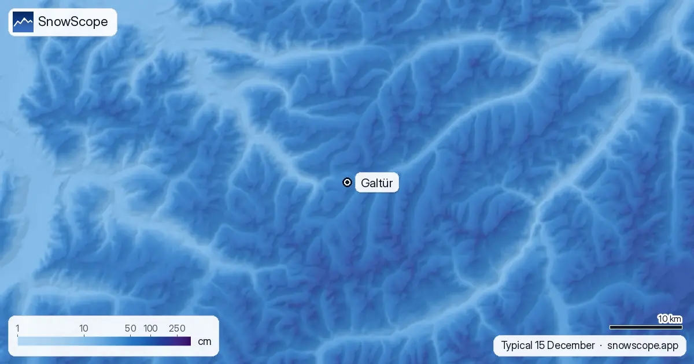

Galtür فدجنبر: الاختيار الهادي ف Paznaun بثمن الموسم الهادي
Galtür فالطرف الهادي ديال الواد ديال Paznaun، وأول تيليسييج فيها ف 1628 م. نهار 15 دجنبر عادي، التاريخ ديالنا ديال 46 شتوة كيعطي 55 سم فالوسط، وفالموسم الهادي (حتى ل 18 دجنبر) السكيباس الرسمي ديال النهار ب 55,50 EUR.
شوف توقعات التلج مباشرة ديال Galtür فالتطبيق ديال SnowScopeالعلو ديال التلج، التنبيهات والخريطة 3D، فابور.
شنو كيظنو الناس على دجنبر هنا
بزاف ديال الناس كيشوفو Galtür بحال الجار الصغير والناعس فالواد، مزيان للعائلات وماشي للتلج بصح. فدجنبر الأرقام كتقول العكس: التحت عالي بحال Obertauern، والتلج شوية أعمق. فسيمانة 15 حتى 21 دجنبر، 93 % من الشتوات كان فيهم 30 سم ولا كثر فالوسط (1961 م) و 98 % فالفوق (2295 م).


شنو كتبين 46 شتوة بصح
نهار 15 دجنبر عادي فيه 40 سم لتحت، 55 سم فالوسط و 73 سم فالفوق. فسيمانة نوال الوسط كان فيه 30 سم ف 96 % ديال الشتوات و 60 سم ولا كثر ف 67 %. وحتى شتوة ما كان التحت عريان نهار 15 دجنبر.
فبداية دجنبر التحت هو النقطة الضعيفة: النهار العادي ديال 30 سم تما هو 28 نونبر، وغير 54 % ديال الشتوات كان فيهم هاد القدر من 1 حتى 7 دجنبر. الاتجاه خفيف: فالوسط المعدل ديال دجنبر مشى من 55 سم فأول 15 شتوة ل 50 سم فآخر 15.
الجزء الرخيص
حسب اللائحة الرسمية، الموسم ف Galtür كيبدا نهار 4 دجنبر 2026. الموسم الهادي حتى ل 18 دجنبر، والنهار للكبار ب 55,50 EUR و 6 أيام ب 258 EUR. من 19 دجنبر: 58,50 EUR و 286,50 EUR.
هادو من أرخص الأثمنة ديال محطة عالية ف Tirol فهاد السلسلة، والتلج ماشي خايب على هاد الحساب.
فين كتدخل Obertauern
Obertauern ف Salzburg هي المقارنة الواضحة: نفس التحت ف 1628 م، محطة أكبر (87 كم ديال البيستات مقابل 27 كم) وشوية تلج قل فدجنبر، 43 سم فالوسط نهار 15 دجنبر عادي و 80 % ديال الشتوات فيهم 30 سم فسيمانة 15 حتى 21 دجنبر. السكيباس ديالها ديال 6 أيام قبل نوال ب 331 EUR، أغلى من 258 EUR ديال Galtür.
Obertauern للكبر والتزلج من باب الأوطيل. Galtür لسيمانة أهدى وأرخص، بحظوظ تلج شوية أحسن فدجنبر.
التفاصيل الصغيرة
Galtür صغيرة: 9 تيليسييجات و 27 كم ديال البيستات. اللي كيعرفو يتزلجو غادي يعرفوها فجوج أيام ويقدر يبغيو نهار فبلاصة أخرى فالواد. الطريق فآخر واد طويل تقدر تتسد على حساب خطر الانهيارات من بعد العواصف الكبار: خلي نهار زايد.
نصايح للي كيتزلجو
- حجز سيمانة بين 4 و 18 دجنبر باش تاخد ثمن الموسم الهادي (258 EUR ل 6 أيام).
- ختار السيمانة التانية ديال دجنبر ولا من بعد: التحت ما كيوصلش ل 30 سم فالمعدل حتى لآخر نونبر.
- خلي نهار زايد: الطريق ديال Paznaun تقدر تتسد من بعد تلج كثير.
- قرا كل صباح النشرة ديال الانهيارات ديال Tirol (avalanche.report) قبل ما تخرج من البيست.
خرائط أخرى (مواقع خارجية)
المراجع والمصادر
- Galtür: official lift-pass prices (2026-27), checked 13 November 2026 www.galtuer.com/en/winter/operating-times-prices/skipass-prices-silvapark
- Obertauern: official lift-pass prices (2026-27), checked 13 November 2026 www.ski-obertauern.at/en/ski-pass/ski-pass-prices
على هاد الأرقام
الأرقام ديال التلج: التاريخ ديال التلج ديال SnowScope، 46 شتوة اللي فاتت (1980-81 حتى ل 2025-26) فالعلوات ديال المحطة، مصحح بالعلو (تقدير لمنطقة، ماشي البلاغات ديال المحطة)؛ «تلج مزيان» = 30 سم ولا كثر فالأرض فالمعدل ديال السيمانة. الخريطة: العلو العادي ديال التلج نهار 15 دجنبر موزع على التضاريس حسب العلو. البيستات والتيليسييجات: OpenSkiMap. الأثمنة ديال السكيباس: اللوائح الرسمية ديال المحطات، متشافة نهار 13 نونبر 2026؛ الأثمنة تقدر تتبدل.
النشرات الرسمية ديال الانهيارات: Lawinenwarndienst Vorarlberg
كيفاش تستاشهد بهاد المقال
للبحث، التعليم ولا الصحافة: الأرقام والرسومات تقدر تعاود تخدم بيهم بحرية تحت CC BY 4.0 مع هاد الاستشهاد.
SnowScope (2026), Galtür فدجنبر: الاختيار الهادي ف Paznaun بثمن الموسم الهادي, https://snowscope.app/blog/ar/2026/11/galtuer-december-skiing-quiet-paznaun-budget.html, تشاف ف 2026-11-14
SnowScope (Atlas Labs). (2026, November 14). Galtür فدجنبر: الاختيار الهادي ف Paznaun بثمن الموسم الهادي. SnowScope snow reports. https://snowscope.app/blog/ar/2026/11/galtuer-december-skiing-quiet-paznaun-budget.html
BibTeX
@misc{snowscope2026galtuerdecemberskiingqui,
author = {{SnowScope (Atlas Labs)}},
title = {Galtür فدجنبر: الاختيار الهادي ف Paznaun بثمن الموسم الهادي},
year = {2026},
month = nov,
howpublished = {\url{https://snowscope.app/blog/ar/2026/11/galtuer-december-skiing-quiet-paznaun-budget.html}},
note = {Published 2026-11-14 13:29 UTC; accessed 2026-11-14}
}· CC BY 4.0 · الطريقة، الداتا والأدوات →
Galtür: التلج والحرارة حسب العلو، هاد الشتا مقارنة مع اللي فاتت (الأدوات) →
تابع Galtür
فابور: ميساج ملي يجي التلج، والتوقعات كل صباح.